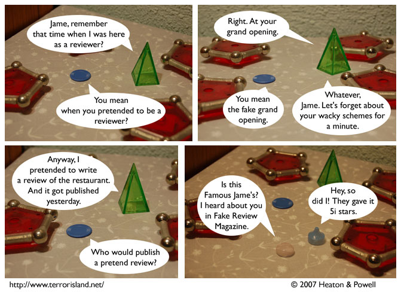

Strip #108
— Monday, February 19, 2007
They were originally going to give it 5i+2 stars, but that would be too complex.
Notes, Thoughts, &c.
Ben’s Notes
Getting the pieces in panel four to look transparent was kind of fun. Maybe we’ll do a storyline later on where all the characters become transparent because of an alien disease or something.
Lewis’s Notes
I suggested the following alternative title text: “They were originally going to give it π+2e stars, but that would have been irrational, even for them.” Note that I came up with a pun of my own volition.